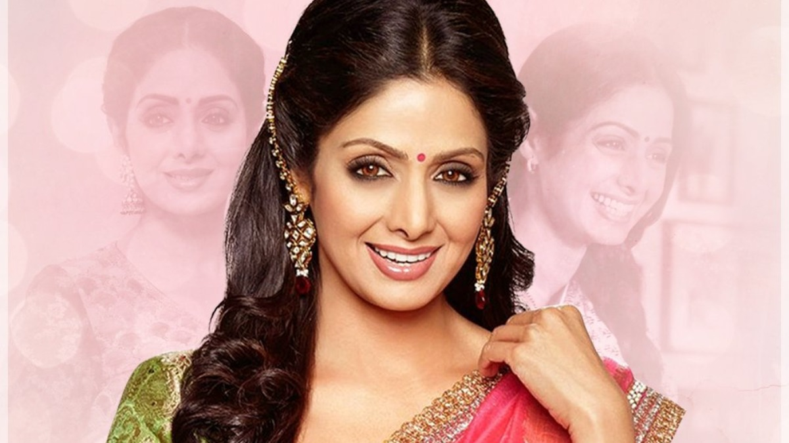

Sridevi
Indian actress

Loading...
Biography
Shree Amma Yanger Ayyappan (13 August 1963 – 24 February 2018), known professionally as Sridevi, was an Indian actress who worked in Telugu, Tamil, Hindi, Malayalam, and Kannada language films.[10][11] Cited as the "First Female Superstar" of Indian cinema,[10][11] she was the recipient of various accolades, including a National Film Award, a Kerala State Film Award, a Nandi Award, a Tamil Nadu State Film Award, four Filmfare Awards, including a Filmfare Lifetime Achievement Award and three Filmfare Awards South.[12] Sridevi's career in Indian cinema spanned over 50 years in a range of genres from slapstick comedy to epic dramas. She was known for her reticent and introverted personality, but headstrong and outspoken screen persona, regularly playing strong-willed, enlightened women.[13][14] In 2013, Sridevi was honoured with the Padma Shri, the country's fourth highest civilian honour.[9] She was also voted 'India's Greatest Actress in 100 Years' in a CNN-IBN national poll conducted in 2013 on the occasion of the centenary of Indian cinema.[15]
Sridevi made her debut as a child in the 1967 Tamil film Kandhan Karunai at the age of four,[16] and started her acting career in lead roles as a child in M. A. Thirumugam’s 1969 mythological Tamil film Thunaivan. She continued to act as a child artist in Tamil, Telugu, Malayalam and Kannada films. She made her Hindi film debut at the age of nine in Rani Mera Naam (1972). Her first role as a teen-adult came in 1976 at age 13, when she was cast in the Tamil film Moondru Mudichu. She quickly established herself as one of the prominent and leading female stars of South Indian Cinema, with roles in 16 Vayathinile (1977), Thulavarsham (1976), Angeekaaram (1977), Sigappu Rojakkal (1978), Padaharella Vayasu (1978), Vetagaadu (1979), Varumayin Niram Sivappu (1980), Meendum Kokila (1981), Premabhishekam (1981), Vazhvey Maayam (1982), Moondram Pirai (1982), Aakhari Poratam (1988), Jagadeka Veerudu Athiloka Sundari (1990) and Kshana Kshanam (1991).
Following a notable appearance in the romantic drama Julie (1975), Sridevi's first starring role in Hindi cinema came with the drama film Solva Sawan (1979), and she received wider recognition for the action film Himmatwala (1983). She established herself in the industry with a string of successful films, including Mawaali (1983), Justice Chaudhury (1983), Tohfa (1984), Naya Kadam (1984), Maqsad (1984), Masterji (1985), Karma (1986), Nazrana (1987), Watan Ke Rakhwale (1987), Mr. India (1987), Waqt Ki Awaz (1988) and Chandni (1989). She received widespread praise for her performances in films, including Sadma (1983), Nagina (1986), ChaalBaaz (1989), Lamhe (1991), Khuda Gawah (1992), Gumrah (1993), Laadla (1994), and Judaai (1997). Following the role of the titular protagonist in the television sitcom Malini Iyer (2004–2005), Sridevi returned to film acting with the highly successful comedy-drama English Vinglish (2012) and then starred in the Tamil language fantasy film Puli (2015), which marked her final film in South Indian Cinema. Sridevi then starred in her 300th and final film role in the psychological thriller Mom (2017). She earned widespread critical acclaim for her performances in both films, and for the latter was posthumously awarded the National Film Award for Best Actress.
On 24 February 2018, she was found dead of an accidental drowning in her guest room at the Jumeirah Emirates Towers Hotel, in Dubai, United Arab Emirates.[17] News of her death featured prominently in Indian and international media. She was married to film producer Boney Kapoor, with whom she had two children, including actress Janhvi Kapoor.
Achievements
Quotes
To be very honest, the characters I have played in the south has been much, much more challenging and exciting then what I have done in Hindi cinema
The character I was supposed to play in "Yugpurush" is a very good character. There was only one thorn in the flesh, I was supposed to be playing a prostitute. Somewhere I think I have developed a mental block against playing a prostitute. I get uncomfortable and so I guess I won't be able to do full justice to the character.
Believe it or not, I don't have an ego. That is one of the first lessons I learnt when I entered this line. Every thing here is so uncertain. One moment you are a goddess and the next moment you are out of work. And under the circumstances the ego is hardly any help. I don't believe in it and I think every actor or actress should learnt to crush their ego even before they learn to act. But here the equation is very strange, so many people who don't know to act also have an ego
HER TOP 10 MOVIES

1. Moondram Pirai (1982)::The film received highly positive reviews from critics and was a box office success and had a theatrical run of 329 days. The film won two National Film Awards: Best Actor for Haasan, and Best Cinematography for Mahendra. It also won the Best Director Award for Mahendra at the Filmfare Awards, and five Tamil Nadu State Film Awards, including Best Film (third prize), Best Actor (Haasan) and Best Actress (Sridevi).
Mahendra remade the film in Hindi as Sadma, with Haasan, Sridevi and Smita reprising their roles from the original version.
2. Sadma (1983)::The film is a remake of the 1982 of Balu Mahendra's own Tamil Film Moondram Pirai, starring Kamal Haasan and Sridevi.
The film was unsuccessful at Box office but achieved cult status and is regarded as an all time classic.
3. English Vinglish (2012)::The film marked Sridevi's return to filmmaking after a 15-year hiatus. The film and Sridevi's performance received universal appreciation from critics and audiences alike. The film was declared a hit in India and overseas.
2. Sadma (1983)::The film is a remake of the 1982 of Balu Mahendra's own Tamil Film Moondram Pirai, starring Kamal Haasan and Sridevi.
The film was unsuccessful at Box office but achieved cult status and is regarded as an all time classic.
4. Mr. India (1987)::The film was the highest-grossing Indian film of 1987, and remains a cult classic in India. The film was known for several of its lines and songs, including Sridevi's Miss Hawa Hawaii performance, and Amrish Puri's quote "Mogambo khush hua" (Mogambo is pleased), which is one of the most famous quotes of Bollywood and became synonymous with Puri.
Sridevi was paid an unprecedented ₹11 lakhs to play the lead female role which was the highest ever paid to a female actor during that period.
5. Lamhe (1991)::Sridevi received widespread acclaim for her performance in the film and won the Filmfare Award for Best Actress. Although a commercial failure in India, it became a success in the UK.
6. Kshana Kshanam (1991)::The film received critical acclaim which led to four state Nandi Awards and two Filmfare awards, including Best Actress for Sridevi.
7. Pathinaru Vayathinile (1977)::16 Vayathinile attained cult status in Tamil cinema and is considered to be the bellwether of films depicting realistic portrayals of rural life.
The film became the first Tamil film to be shot completely outdoors; Tamil films were primarily filmed in Chennai studios.
The film won numerous awards. Including National Film Award for Best Female Playback Singer for S. Janaki; the Filmfare Award for Best Actor (Tamil) for Haasan and Special Commendation Award for Performance for Sridevi; and four State Awards, including Best Director for Bharathiraja and Best Actor for Haasan.
It was remade in Telugu as Padaharella Vayasu (1978), in Hindi as Solva Sawan (1979), and in Malay as Melati Putih (1984).
8. Chaalbaaz (1989)::The film is the remake of 1973 Indian movie Seeta Aur Geeta. The film was one of the biggest commercial and critical success of the year. The film is regarded as one of Sridevi's finest performances. She won Filmfare award for best actress.
9. Mom (I) (2017)::Mom marked Sridevi's 300th, and final major role appearance before her death on 24 February 2018.
The film received two awards at the 65th National Film Awards : Best Actress for Sridevi, marking the first posthumous win in the category and Best Background Score for A.R. Rahman. At the 63rd Filmfare Awards, the film received six nominations, including Best Actress and Best Actress (Critics) for Sridevi and Best Supporting Actor for Siddiqui.
10. Chandni (1989)::Chandni was one of the biggest box office hits of 1989. It won the National Film Award for Best Popular Film of 1989. The film also reaffirmed Sridevi's position as the top female star of the 1980s. While she topped the Hindustan Times' list of Yash Chopra's 'Top 5 Heroines', CNN-IBN also ranked her first on a similar list, saying "Yash Chopra immortalised Sridevi as the perfect Chandni". India Today and NDTV also included her in such lists, stating that the film established Sridevi "as the nation's sweetheart''.